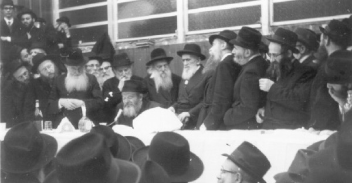

הרצאה מדעית בבית הכנסת?!
מאז שהושק מדור זה, בו אנו מספרים על חסיד שנפטר בקשר עם יום היארצייט שלו, זכינו לכתוב על חסידים רבים. אך דומה כי זכות מיוחדת היא השבוע, לכתוב על ר’ סנדר ריינין, חסיד שהרבי עצמו הזכיר וביקש לא לשכוח את היארצייט שלו. על היהודי השקט, הבודד והערירי שהיה ידיד בית רבי אצל שלושה אדמו”רים ואף דייר בביתו של ה
מאז שהושק מדור זה, בו אנו מספרים על חסיד שנפטר בקשר עם יום היארצייט שלו, זכינו לכתוב על חסידים רבים. אך דומה כי זכות מיוחדת היא השבוע, לכתוב על ר’ סנדר ריינין, חסיד שהרבי עצמו הזכיר וביקש לא לשכוח את היארצייט שלו. על היהודי השקט, הבודד והערירי שהיה ידיד בית רבי אצל שלושה אדמו”רים ואף דייר בביתו של הרבי לתקופה קצרה – בכתבה שלפניכם.

החסיד ר’ חיים אברהם אלכסנדר סענדר יצחק ריינין, או ר’ סענדר, כפי שהכירהו כולם בפשטות, היה חסיד צנוע, עובד אלוקים בכל ליבו ונפשו – אך בצורה כזו שאיש לא ירגיש בו.
ר’ סענדר נולד ברוסיה, בערך בשנת תר”נ. עוד בהיותו אברך צעיר, זכה שהרבי הרש”ב קירבו מאד. הוא היה יושב בחדרו של הרבי והרבי היה מספר לו הרבה דברים, אותם כתב לעצמו ושמר בתיבה מיוחדת. הוא גם עסק ב’עסקנות’ לטובת בית הרב. כך למשל כאשר היו צריכים להביא אתרוג, היה ר’ סענדר נוסע ומכתת רגליו על מנת להביא לרבי אתרוג מהודר.
באחת השנים, הגיע ר’ סענדר מאיטליה ואתרוג קלבריה מהודר בידו סמוך מאד לחג – בי”ג תשרי. כאשר נכנס לבית הכנסת גילה את הרבי עומד כשליח ציבור לכבוד יום ההילולא של אביו. ר’ סענדר לא המתין אפילו רגע, ניגש והניח את האתרוג על העמוד, שהרבי ישמח לראות את האתרוג.
הרבי הרש”ב הדריך את ר’ סענדר בעצות טובות. כאשר הגיע לעונת השידוכין, והציעו לו (ויש אומרים כי הרבי עצמו הציע) את בתו של ר’ שניאור זלמן זליגסון, אמר לו הרבי: “מיט דעם מענטשען קען מען לעבן אן איידעלען לעבן [= עם אדם זה יכולים לחיות חיים עדינים].
לאחר הסתלקות אדמו”ר הרש”ב, התקשר בלב ונפש לבנו וממשיך דרכו, הרבי הריי”צ, והיה לבן בית גם בביתו. תקופה מסויימת התגורר בגרמניה, והיה חבר בוועד שאליו הגיעו התרומות שנשלחו מחוץ לארץ, לטובת החזקת המקוואות ברוסיה הקומוניסטית.
כאשר נאסר הרבי, עסק ר’ סענדר במסירות במבצע ההצלה של הרבי. באותם ימים ניסו הקומוניסטים, להשיג היכרות בינלאומית, כלכלית וצבאית בממשלה החדשה אותה הקימו שנים ספורות קודם לכן לאחר המהפכה. אחת הממשלות שממשלת ברית המועצות ניסתה ליצור עימה קשרים כאלה, היתה גרמניה, שלר’ סענדר היו כמה קשרים עם אנשים בצמרת הממשל שם. ר’ סענדר פנה אליהם וסיפר להם את המאורע, כשהוא מציע להם ללחוץ על ממשלת רוסיה לשחרר את הרבי. ברוך ה’, הוא הצליח מאד וזה היה אחד הדברים שהחישו את הגאולה בדרך הטבע.
בשנות הצ’, התגורר ר’ סענדר בצרפת, ועסק בשליחות הרבי בעניינים שונים, עבור אחיו האסורים בכלא הרוסי, בין אם זה כלא כפשוטו ובין אם זה שאר החסידים שהיו כלואים בבית הכלא הגדול בהיסטוריה – מאחורי מסך הברזל.
כאשר נסע הרש”ג לפאריז בשנת תרפ”ט בשליחות הרבי, על מנת לעורר את הקהילות היהודיות שם לטובת יהודי רוסיה, היה ר’ סענדר בין העוסקים במלאכה. הרש”ג וצוותו נפגשו עם רבנים ומנהיגי קהילות, והביקור הסתיים בהצלחה רבה.
באגרות קודש של הרבי הריי”צ שנדפסו, מוצאים אנו מספר מכתבים ובהם מורה לו הרבי לבקר את פלוני על מנת לחוות את דעתו לגבי שאלה מסויימת ששאל עליה את הרבי, וכדומה.
הרצאה מדעית
בבית הכנסת?!
פרק מיוחד בפני עצמו, היתה העסקנות בהפצת מעיינות התורה והחסידות בפריז, העיר שסימלה אז יותר מכל את הנאות העולם החופשי והחומרי.
אחרי מלחמת העולם הראשונה נהרו לפריז מהגרים רבים ממזרחה של אירופה, ובהם גם פליטים שברחו מרוסיה בשל ריבוי התלאות שנגרמו בעקבות המהפכה. רובם של המהגרים היו סוחרים קטנים ובעלי מלאכה, אבל היו בהם גם מספר ניכר של תעשיינים, שפיתחו בצרפת מוצרים חדשים והגיעו למעמד כלכלי גבוה.
גם אינטלקטואלים רבים התרכזו בפריז, בפרט סטודנטים יהודים שלא נתאפשר להם ללמוד במדינות מולדתם, רובם תלמידי המכללות לרפואה ולפילוסופיה.
למרבה הפלא, רבים שהיו רחוקים מהיהדות בארץ מולדתם, נתקרבו למסורת האבות דוקא בצרפת, בהשפעתה של האוירה השמרנית ששררה בה. מאידך גיסא, בקרב הצעירים שהצליחו להתערות באוכלוסיה המקומית החלה ההתבוללות לתת את רישומה.
בתקופה זו הרבה אדמו”ר הריי”צ פעלים – ממקום מושבו בריגא – לחיזוק היהדות במדינות שונות, וצרפת בכללן, אלא שכאן נצטרפה לכך גם פעילות יחודית שהתבטאה בהפצת מעיינות החסידות ובלימוד דא”ח.
שני עמודי התווך שעליהם הושתתה הפעילות הרוחנית היו השד”ר הרה”ח ר’ שמעון ליב גרינברג ע”ה, והעסקן-הגביר ר’ הלל זלטופולסקי ע”ה. הראשון היה מתלמידי “תומכי תמימים” בליובאוויטש, והשני, בנו של החסיד הנודע הרה”ח ר’ זלמן זלטופולסקי מקרמנצ’וג.
ר’ סענדר שהיה מהחסידים הבודדים ששהו בעיר, נרתם לעזרה והרבי העביר דרכו הוראות רבות שנגעו לפעילותם של שני החסידים הנזכרים. בחודש אדר שני תרצ”ב כתב לו הרבי שהיה טוב מאד אילו היו מבצעים את התכנית של ר’ הלל לכנס צעירים בביתו של מר “וייל הצעיר”, ולדבר בפניהם אודות דא”ח. וכן להתוועד בבית-הכנסת של ה’מזרחי’. או בקיצור: “מה שיכולים לעשות להרחיב, הכל יפה”.
כחודש לאחר מכן פנה הרבי אל ר’ סענדר בדבר “המשרה לגרינברג, לתועלת להשארותו בפאריז, שבכל אופן הביא תועלת ב”ה, ובטח יעשו בזה ויראו להביא בפועל” (באותו מכתב מספר לו הרבי שנתקבל אצלו מכתב מהרב גרינברג שבו מדווח הוא לו על הנעשה בב’ ניסן, וכן קיבל שני מכתבים מעניינים מרה”ז, בעלי “תוכן עשיר בדבר העצות להפצת חסידות”).
מכתב מעניין נוסף הוא מקיץ תרצ”ב, אז כתב הרבי לר’ סענדר אודות הצעתו של מר קריינעס, שבן משפחתו של הרבי, פרופ’ פישל שניאורסון יתן הרצאות אודות החסידות, הרצאות מדעיות כדרכו של ר’ הלל זלטופולסקי.
הרבי נענה להצעה מבחינה עקרונית, אבל דרש שהרצאות מעין אלו ינתנו רק בבתים פרטיים ולא בבית-הכנסת; בבית הכנסת צריך לדבר מישהו כמו הרב גרינברג, שמדבר חסידות כפי שהיא ולא “הרצאה מדעית” אודות החסידות…
ידידות גוררת ידידות
באותה תקופה התגוררו הרבי והרבנית בצרפת. אשתו של ר’ סענדר שהכירה את הרבנית עוד מילדותה, היתה נפגשת איתה לעיתים תכופות. הקשר בין הנשים יצר קשר גם בין בעליהן – הרבי מלך המשיח וסענדר ריינין. זה האחרון היה מבקר פעמים רבות את הרבי מלך המשיח. בכל פעם שבא לבית הרבי, סיפר שנים לאחר מכן, מצא את הרבי יושב ולומד.
כאשר הוקם ועד קהילות יהודיות בפריז, והיו בועד כאלו שרצו את הרבי מלך המשיח כרב, פנה ר’ סענדר במכתב לרבי הריי”צ וסיפר לו על דבר ההצעה וכי אנשי הועד היו מאד רוצים ברבי כרב. הרבי פנה לחתנו וביקשו לשקול את הרעיון שוב.
פעם אחת נכנס ר’ סענדר לביתו של הרבי ומצא את הרבי כשהוא שקוע בספר ‘עבודת הלוי’, ספרו של הרב ר’ אהרן מסטראשעלע. הרבי שראה אותו נכנס, העיר: “דאס איז א טיפער ספר”.
על עוצמת הקשר הידידותי בין הרבי מלך המשיח ובין ר’ סענדר, ניתן ללמוד ממכתבו של הרבי מלך המשיח מכ”ח תשרי ת”ש, מכתב אותו כתב לר’ ישראל ג’יקובסון אשר בארצות הברית, בדבר מאמצי ההצלה להוציא את הרבי מוורשה המופגזת. במכתב שבו כתב הרבי את השמות ותאריכי הלידה של הרבי הריי”צ, הוסיף הרבי מספר שורות, גם הן בכתב ידו ובצרפתית:
“יש לי גם טובה אישית לבקש מאתכם: המדובר הוא אודות ידיד יקר מהמשפחה שלנו, מר אלכסנדר ריינין, גר בפריז, ומבקש לסדר עבורו אפידייביט. הוא ואשתו סילבי’. יש להם מספיק עושר כך שלא יהיו נצרכים לעזרה כספית”.
לאחר שהרבי הריי”צ הגיע לארצות הברית והחל במאמצים להצלת בתו וחתנו, היה ר’ סענדר אחד מאנשי הקשר. אליו הועברו מכתבים מוצפנים בנוגע למאמצי ההצלה והוא השיב עליהם לארצות הברית.
כאשר הגיעו לארצות הברית, הפסיק ר’ סענדר לבקר בביתו של הרמ”ש, כפי שנקרא אז הרבי מלך המשיח. פעם שאל אותו על כך הרבי: “פארוואס זעהט מען אייך ניט (= מדוע אין רואים אותך)?”, “כאן, אתה חתן הרבי”, השיב ר’ סענדר, בהתכוונו לכך שכאשר נמצא הרבי יחד עם חותנו, הרי ש’מגיע לו’ יחס אחר מאשר בפריז, בה היו הם שני חסידים בודדים.
עליית שירת הים
בשנותיו הראשונות בארצות הברית, חלה בקיבתו וסבל ייסורים נוראים. גיסו, ד”ר אברהם זליגסון שבדק אותו, הגדיר את מצבו כחולה מסוכן. המצב החמיר עד כדי כך, שהרופאים התייאשו והודיעו כי אין להם דרך לעזור לו.
בצר לו נכנס ר’ סענדר ליחידות ותינה בפני הרבי הריי”צ את צרתו, כשהוא מדווח על דעת הרופאים. “הרופאים אינם בעלי בתים לפסוק”, הגיב הרבי למשמע דעתם המלומדת. “עליך להקפיד לעלות לתורה בכל שנה לעלייה לתורה המסתיימת בפסוק “אני ה’ רופאיך”, וה’ ישלח לך רפואה שלמה”. הרפואה אכן נשלחה, ומאז עד יום מותו הקפיד ר’ סענדר לעלות לתורה לעליית שירת הים (רביעי פרשת בשלח), העלייה המסתיימת בפסוק הרפואה.
היחס הידידותי והקירבה לבית רבי המשיכו גם לאחר שהגיע לארצות הברית. ר’ סענדר היה מוזמן לאכול על שולחנו של הרבי הריי”צ בחגים ובשבתות. אפילו לאחר שסיימו המסובים לאכול, הקפיד הרבי שלא יסירו את הצלחות מן השולחן עד לאחר שר’ סענדר סיים אף הוא לאכול.
הרבי דואג ליהודי בודד
בשנת תשי”ב, חלתה אשתו איטא צבי’ במחלה הנוראה, ובכ”ב חשון תשי”ג נפטרה. הרבי מלך המשיח הגיע לביתו של ר’ סענדר לנחם את האבל.
בשבת לאחר הפטירה, פנה הרבי לר’ סענדר בהתועדות ואמר לו: “כאשר נפטרה הרבנית של הצמח-צדק הי’ במרירות גדולה כו’, עד שנכנס אליו א’ החסידים המקורבים, ואמר לו: רבי, הרי בפירוש שמענו מכם שמ”ש “ראה חיים עם אשה אשר אהבת” – “תורה היא”, ויענהו הצמח-צדק: החייתני.
– אף על פי שזהו מאמר חז”ל מפורסם, ובודאי ידעו הצ”צ שהי’ בקי בש”ס וכו’, מכל מקום, כאשר מישהו אחר אומר זאת, הרי זה פועל”.
הרבי דאג לכך שר’ סענדר לא יישאר בודד בביתו והורה לסדר שני בחורים שילונו עימו. אחד הבחורים שלנו עימו תיאר את אישיותו במילים קצרות: “בעל שכל ישר, בעל מידות טובות, הצנע לכת בדייקנות נפלאה, התעניין בכל נושא לפרטיו. על עניינים מסויימים מתח ביקורת”.
ר’ סענדר, נהג לקום בכל לילה באמצע הלילה וללמוד “לקוטי תורה” או “דרך מצוותיך”. ביום הכיפורים נהג לעמוד כל התפילה בכל שנה.
בשנת תשי”ז, הוצרך לעזוב את הבית שבו התגורר. הרבנית הזמינה אותו לבוא ולגור בביתם, אך הוא סרב. לבסוף הסכים, והתגורר בקומה השלישית בביתו הפרטי של הרבי, ברחוב פרזידנט 1304. לאחר שלושה שבועות, קם ועזב את הבית.
הניגון האהוב
הקשר ההדוק והידידותי עם הרבי המשיך עד יום מותו של ר’ סנדר. פעם אחת, סיפר ר’ סענדר לרבי כי הוא מחבב במיוחד את הניגון של הסטראשלער, וסיפר לרבי את הסיפור הבא:
“כאשר הייתי ילד, הגיע לביתנו פעם בחור ישיבה שהשתמט מגיוס לצבא הרוסי, ושהה בביתנו זמן מה, כיון שלא יכל לשהות בביתו או בכל מקום אחר שבו יחפשו אחריו. הבחור אמנם היה מבוגר ממני, אך הוא מאד קרב אותי והיינו בידידות. פעם אחת, לימד אותי ניגון ששמע מרבו – ניגונו הידוע של ר’ אהרן סטראשעלער.
לא ארך זמן רב, והבחור גילה כי המשטרה הצבאית בעקבותיו גם במקום המסתור בביתנו. ברירות לא היו לו, והוא נאלץ לברוח מהמדינה. אחרי גלגולים וטלטולים רבים, הגיע בסופו של דבר לארגנטינה, שם שלח ידיו במסחר והתעשר מאד. הוא נישא והקים שם משפחה, והיה תורם כסף רב לישיבות תומכי תמימים.
שנים רבות חלפו, עד שנפגשנו בשנית. כאשר ראיתי אותו, נהיה לי לא טוב בלב. מראה פניו של בחור הישיבה לא הזכיר את שנותיו בישיבה. ניתן היה לראות כי הוא סר מדרך התורה והיהדות. לא ידעתי איך להגיב. לא רציתי לומר לו בפירוש את אשר על ליבי – לא נעים להוכיח כך יהודי בפניו. רעיונות שונים חלפו במחשבתי, עד שנזכרתי באותו ניגון מיוחד והחלתי לנגן אותו. “אוי!”, זעק לפתע הגביר – בחור הישיבה לשעבר, “זהו הניגון של הרב שלי!”. הוא החל להסתובב הלוך וחזור בחדר, עד שיצא ממנו בלי לומר מילה”.
כשסיים ר’ סענדר לספר זאת לרבי מלך המשיח, שאל: “עד היום, יש לי חיבה מיוחדת לניגון זה. מדוע אין מנגנים את ניגוניו של ר’ אהרן מסטראשעלע בעת ההתוועדות?”. הרבי השיב שידבר עם המנגנים.
בהתוועדות י”ב תמוז תשח”י, הורה הרבי לנגן את ה’סטראשעלער ניגון’, וכשהתחילו לנגן, פנה הרבי לר’ סענדר ואמר לו: “ר’ סענדר, איר האט געבעטן א סטראשעלער ניגון (= ר’ סענדר, ביקשתם ניגון של הסטראשעלער)”.
התואצה הטראגית של אובדן חבילה
בכל הזדמנות שיצא מביתו ובא אליו, אחז בידו חבילה קטנה, ובתוכה בין היתר, רשימת הדברים שאותם שמע ביחידות מהרבי הרש”ב, ואותם לא שזפה עין. ר’ סענדר לא התיר לאיש לראות רשימה זו – אפילו לרבי מלך המשיח, כפי שסיפר על כך בעצמו בשיחה מיוחדת שאמר לאחר פטירתו של ר’ סענדר.
בסוף שנת תשי”ח, אבדה לו החבילה. עוגמת הנפש שלו היתה כה גדולה, עד כי נפל למשכב שממנו לא קם. בכ”ד אלול תשי”ח נפטר. הרבי ששמע על כך, התבטא שזה כנראה בגלל עוגמת הנפש מאובדן החבילה.
בשבת פרשת נצבים וילך אמר הרבי שיחה קצרה ומיוחדת לעילוי נשמתו:
בין הענינים הבלתי-רצויים שצריכים לתקן לפני ראש השנה, ישנו מאורע שאירע בשבוע זה – בקשר לפטירתו של הרה”ח ר’ סנדר ריינין – “שלא נספד כהלכה” (כלשון הגמרא).
ר’ סנדר הנ”ל – אף שמצד גיל שנותיו לא למד בתומכי-תמימים, אבל, עוד בנערותו זכה לקירובים מיוחדים (“שטאַרקע קירובים”) מכ”ק אדמו”ר (מוהרש”ב) נ”ע. פעמים רבות שהה בחדרו משך זמן, וזכה לשמוע ממנו כמה וכמה ענינים.
– לא עלה בידי לדלות ממנו ענינים אלה, להיותו איש סגור ושקט ביותר (“ער איז געווען אַ שטילער איד, זיך אין ערגעץ ניט געמישט וכו’”), אבל, ביחד עם זה, הי’ ניכר עליו שענינים אלה היו חקוקים בזכרונו, כך, שיש בזה גם העילוי דחקיקת דברי תורה במוח הזכרון, כמבואר בלקו”ת ד”ה והדרת פני זקן.
והנה, בנוגע לכל הענינים שלאחרי סתימת הגולל – בודאי שכ”ק אדמו”ר נ”ע השתדל עבורו (“ער האָט אים שוין פאַרזאָרגט”), כך שכל הענינים הם “כהלכה” ועוד יותר מזה כו’,
– (כ”ק אדמו”ר שליט”א הפסיק לרגע, ואמר:) אילו היו “פּוילישע חסידים” שומעים דיבורים בסגנון האמור, “וואָלטן זיי שוין געמאַכט דערפון”… –
אבל בנוגע להענינים שלפני סתימת הגולל… ולכן, כיון שבפנימיותו הי’ “אַ חסיד’ישער איד”, יאמרו “לחיים” עבורו – כפי שאומרים אצל חסידים (לא כפי שנהגו העולם (“ביי דער וועלט”) לומר “לזכר נשמתו”, אלא) – לעילוי נשמתו.
בודאי יהי’ זה גם נחת-רוח לכ”ק אדמו”ר נ”ע.”.
כמעט שלושים שנה לאחר פטירתו, עבר אחיינו היחיד של ר’ סענדר, מר ברוך גורלין בחלוקת דולרים. “עוד שבועיים היארצייט של דודך ר’ סענדר”, הזכיר לו הרבי – כנראה כדי שהיהודי הבודד שהיה כה מסור לבית הרב, יזכה ל’קדיש’ ביום היארצייט.
מקורות: אגרות קודש, התוועדויות, תולדות ר’ אברהם הרופא, ‘פריצת אדמו”ר הריי”צ לצרפת’ מאת יהושע מונדשיין